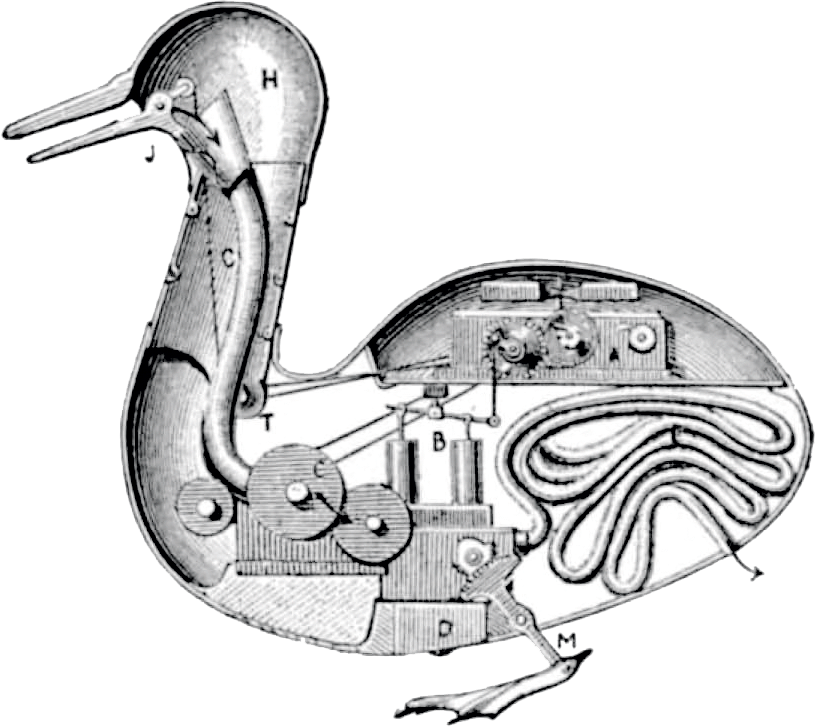

8. gaia · Gizakiaren gaineko ikusmolde filosofikoak
Pertsona substantzietan bakarrik ematen bada, eta horien artean arrazoidunetan bakarrik, eta substantzia oro izaera bada, eta ez bada unibertsaletan ematen, banakoetan baizik, aurkitua dago pertsonaren definizioa: izaera arrazoiduneko banako substantzia.
—Boezio, Contra Eutychen et Nestorium, III · Clauderen itzulpena, latinetik
Azken batean, gizakiak ez du izaerarik, baizik eta… historia du.
—José Ortega y Gasset, Historia como sistema (1935) · Clauderen itzulpena, gaztelaniatik
§29 · Gizakiaren gaineko begirada filosofikoa
Gizaki izatea ez da erraza, ez sinplea. Ezer egiten ez badugu hori saihesteko, pilotu automatikoan zeharka dezakegu bizitza, inguruneak sozializazioaren, ereduaren eta presio sozialaren bidez markatzen digun bidetik1. Filosofia, ordea, gauzak betidanik horrela egin izanagatik, gizarteak hala adierazten duelako edo erosoena delako egitearen kontrakoa da. Filosofoa pilotu automatiko horren aurrean gelditzen da, deskonektatu egiten du eta galdetzen du: zer naiz?, nola jokatu behar dut?, zein da nire funtzioa eta nire xedea?, zer dakar gizaki izateak?, zertan bereizten naiz beste espezieetatik?, ba al dago ezer bizitzaren ondoren?, eta aurretik?
Gizarteak jadanik arduratuak ziren, biziki eta serio, auzi hauetaz, eta ez dute erantzun bat, infinitu baizik, mitotan, usadiotan, ohituratan, erakundetan eta legetan kodetuak. Gakoa haiei begirada filosofikoa aplikatzean datza: zorroztasunez egitea, arrazoia eta argudiaketa soilik erabiliz, izaki naturaz gaindikoetara, botere-egituretara edo tradizioaren pisura jo gabe.
Filosofoarentzat, bizitza, aldi berean, gai bat da —hartaz pentsatu beharra dago— eta problema bat —zaila da eta ez du irtenbide bakarra—, eta hartan asko jokatzen dugu. Antropologia deitzen diogu gizakiari buruzko ikerketa filosofikoari2. Sokratesez (470-399 o.a.a.) eta sofistez geroztik arduratzen da Filosofia gizakiaz; aurreko belaunaldia —naturaren filosofoak— errealitateaz eta kosmosaz arduratu zen batez ere. Baina gizakiak, errealitatearen parte izanik ere, harriek ez bezalako ezaugarriak ditu, baita gainerako izaki bizidunek ez bezalakoak ere: logosaz edo arrazoiaz, norbere buruaren kontzientziaz eta irudimenaz, engainatzeko eta geure burua engainatzeko gaitasunaz, hizketaz eta kulturaz hornituta egoteak fenomeno konplexu eta aztertzeko zail bihurtzen gaitu. Are gehiago gizakiak garenean gizatasuna bera aztertzen: geure existentzian murgilduta gaude eta ezin dugu «geure burua kanpotik ikusi», beste espezie batzuekin egiten dugun bezala. Eta, gainera, izaki sozialak gara, eta horrek beste zailtasun-geruza bat eransten du.
§30 · Gogamen-gorputz auzia
Ispiluari begiratzen diogunean edo norbaiti aurrez aurre begiratzen diogunean, itxura fisikoa ikusten dugu lehenik. Berehala sortzen da galdera: nor edo zer ari da itxura hori epaitzen?, zer gehiago dago hor barruan?, hori al da naizen guztia? Ez naiz estatua bat: gorputzaz gain, emozioak, sentimenduak, ametsak, oroitzapenak, espektatibak, filiak eta fobiak ditut. Non dago hori guztia?, nondik sortzen da?, irauten al du? Bete-betean sartu berri gara gogamenaren filosofia deritzonean eta, bereziki, gogamen-gorputz auzian, prozesu mentalen eta gorputzeko egoera eta prozesuen arteko harremanak ikertzen dituen horretan.
Besoa luzatzen dudanean mahaitik pastel bat hartzeko, zer ari da gertatzen? Eman dezake erantzuna galderan bertan dagoela —besoa luzatzen dut pastel bat hartzeko—, baina askoz gehiago dago. Zergatik egiten dut? Beharbada gose naiz, edo odoleko azukrea igo behar dut, edo, besterik gabe, gogoak ematen dit: motibo horietan behar fisiologikoak —fisikoak, gorputzarenak— nahasten dira esperientziaz jasotako ezagutzarekin —badakit pastelek gosea kentzen dutela, beste batzuk jan ditudalako— eta gizarte-testuinguruarekin —ordua, lekua, egoera—. Eta nork erabakitzen du besoa luzatzea? Zure erantzun intuitiboa hau izango da: «nik». Baina zertan datza ni hori?, non dago? Oso gauza desberdinak egon daitezke gertatzen3:
- Zure nahimenak —hori dena delakoa izanik ere— erabaki aske eta autonomo bat hartu du, zugandik atera dena.
- Zure garunak azukre-gabezia prozesatu du, besoa luzatzea «erabaki» du eta gertatuaren berri eman dio zure kontzientziari, zure nahimenak esku hartu gabe; eta zuk sekuentzia hori «pastel bat nahi dut, hartzera noa» gisa berrinterpretatzen duzu.
Bi erantzun mota nagusi daude galdera hauentzat: dualistak eta monistak4.
§31 · Dualismo antropologikoa
Dualismo antropologikoak bi mota nagusi ditu: substantziena eta propietateena.
Substantzien dualismoa
Substantzien dualismoak defendatzen du gizakiok bi substantzia desberdinez osatuta gaudela:
- gorputza, materiala, materiaren berezko atributuekin —bolumena, pisua, kolorea, konposizio kimikoa, karga elektrikoa—;
- gogamena edo arima5, immateriala, lekurik hartzen ez duena, pisurik ez duena eta ikusi eta ukitu ezin dena.
Dualismo honek postulatzen du fenomeno mentalak, hein batean bederen, ez direla fisikoak, eta horregatik behar dutela euskarri bat halaber immateriala: hortik arima. Harri bat geure buruarekin alderatzen dugunean, intuitiboa zaigu pentsatzea zerbait gehiago dugula —arrazoia, emozioa, gogamena, azken batean bizitza—, gorputzaren osagai materialek soilik azalduko ez luketena.
Platon (427-347 o.a.a.). Uste zuen ez bakarrik gizakia bi substantziaz osatua dagoela —gorputza eta arima—, baizik eta errealitate osoa bi mundutan banatuta dagoela: materiala, objektuak dauden hori, eta Formena (§70), non objektuen egiazko kausa immaterialak, ente matematikoak eta balio moralak baitaude6. Haren antropologiak eragin izugarria izan zuen kristautasunean, Erdi Aroaren hasieratik Mendebaldean nagusi den pentsaeran.
Descartes (1596-1650). XVII. mendeko Iraultza Zientifikoaren figura fundatzaileetako bat izan zen, eta haren gizaki-ikusmoldeak eragin izugarria izan zuen —eta du oraindik—. Harentzat, gizakia res extensa batez —lekua hartzen duen gauza bat, gorputza— eta res cogitans batez —pentsatzen duen gauza bat, arima— osatuta dago. Res cogitans delakoa ebidentea da gure adimenarentzat: zalantzagarri den guztiaz zalantza eginda ere, ezin dugu ukatu pentsatzen dugula. «Cogito ergo sum», esan zuen: «pentsatzen dut, banaiz»7. Datorren ikasturtean ikusiko ditugun arrazoibideetatik abiatuta, res cogitans hori ez da soilik «pentsatzen duen gauza bat»: hilezkorra eta Jainkoak sortua ere bada.
Bitxia bada ere, Descartesek munduaren ikuskera mekanizista bat du: aldaketa oro aurreko kausa baten ondorio da, eta kosmosa erloju erraldoi bat bezalakoa da, zeinaren engranajeek elkar mugitzen baitute. Jainkoaren papera bikoitza da: erlojua eraiki zuen eta hasierako bultzada eman zion; Jainko kristauak ez bezala, ez du mirariz esku hartzen gizakien arazoetan. Baina unibertso mekanizista hori, nahitaez, determinista da: objektuek ez dute mugitzea erabakitzen, mugituak dira. Nola izan gaitezke aske, orduan? Hain zuzen ere, arima immateriala delako eta erlojuko beste engranaje bat ez delako. Eta nola elkarreragiten dute immaterialak eta materialak? Descartesek guruin pinealaren bidez ebatzi zuen8: garunean txertatua, hark egingo luke zubi-lana gorputzaren eta arimaren artean.

Balio al digu gaur dualismo honek? Substantzienari zaila da eustea, non eta ez den ariman sinesten arrazoi erlijiosoengatik. Ikuspuntu enpirikotik, nola izan haren existentziaren frogarik? Eszeptizismo filosofikoak ez du uzten naturaz gaindikora edo behagarri ez denera jotzen; beraz, argudioetara loturik gaude, Filosofian beti bezala. Bestalde, neurozientzia berrienak ere ez du lortu azaltzea gogamena nola sortzen den nerbio-sistemaren jarduera elektrokimikotik; beraz, ezin dugu arima ukatu «materia besterik ez gara» argudio hutsarekin —nahiz eta frogaren zama arima existitzen dela baieztatzen duenarena izan—.
Propietateen dualismoa
Propietateen dualismoa substantzienaz oso bestelakoa da: substantzia bakarra dagoela dio, fisikoa, bi propietate motarekin, fisikoak eta mentalak9. Propietate fisikoak dituen organismo bat ginateke, eta haren zati batek —gaur entzefaloa esango genuke— propietate mentalak ere baditu: sinesmenak, desirak eta emozioak, esaterako. Hiru dira haren barietate nagusiak.
Materialismo emergentista. Materia era jakin batean antolatzen denean, propietate mentalak hartatik azaleratzen direla proposatzen du. Zatien propietate fisikoak ez dira aski, berez, azaleratzen dena azaltzeko; baina azaleratzen dena ez da existitzen antolaketa jakin hori gabe: ez dago gogamenik neuronarik gabe, baina neurona pila bat metatuta10 ere ez da gogamenik sortzen. Pentsa erloju mekaniko batean: haren gurpiltxoek, behar bezala antolatuta, denbora neurtzen dute; barreiatuta, ez. William Jamesek (1842-1910) proposatu zuen XIX. mendean, eta David Chalmersek (1966-) eta Mario Bungek (1919-2020) defendatu zuten XX.ean.
Epifenomenalismoa. Intuizioz uste dugu gogamenak efektu fisikoak eragiten dituela: pastela desiratzen dut, eta besoa luzatzen dut; beldur naiz, eta bihotza azkartzen zait. Thomas Henry Huxleyk eta Frank Jacksonek kontrakoa defendatu zuten: gogamenak ez du fenomeno fisikorik sortzen. Besoaren mugimenduaren kausa erabat fisikoa da, eta kausa horrexek berak sortzen du beste efektu bat: hura luzatzearen nire kontzientzia. Fenomeno mentala ez da kausa, efektu bat baizik —ia ilusiozkoa—: pultsuaren azkartzea da nik beldur gisa interpretatzen dudana, eta ez alderantziz.
Panpsikismoa. Materia guztiak dimentsio mental bat duela dio: objektu guztiek (pan) dute gogamena (psyché), edo esperientziaren subjektu dira.
§32 · Monismo antropologikoa
Monismoak defendatzen du substantzia mota bakarra dagoela. Gizakiari aplikatuta, horrek esan nahi du gogamena eta gorputza bereiztezinak direla: gauza bat eta bera, edo gauza mota berberaz eginak. Baina, gauza mota bakarra bagara, materia ala gogamena gara?
Monismo espiritualista edo idealista
Haren ordezkaririk onena George Berkeley (1685-1753) izan zen, «esse is percipi» defendatzen zuena11, izatea hautemana izatea da: ez dago gogamenetik independentea den objekturik; hautemandakoa eta hautematen duena baino ez dira existitzen. Haren monismoa ez da materialista, idealista baizik. Gaur ia inork onartzen ez duen muturreko jarrera bat da, baina oso galdera baliozko baten gainean eraikitzen da: gure gogamenean agertzen denaz bakarrik bagara kontziente, nola egon gaitezke ziur kanpoko mundu bat existitzen dela? Zure garuna pantaila bat balitz eta bertan mendi bat agertuko balitz, nola jakingo zenuke mendia hor kanpoan existitzen dela eta ez dela zure gogameneko irudi bat besterik?
Bitxikeria gisa baztertu baino lehen, begiratu ondo zer den Berkeleyk ukatzen duena. Ez du ukatzen etxeak, zuhaitzak eta sagarrak existitzen direnik: ideia multzoak direla dio, eta sagar bati «erreal» deitzea dela ikusten duzula, usaintzen duzula eta hozka egiten diozula esatea, ez hautemate horien atzean sekula hautemango ez duzun materia bat dagoela. Haren jomuga materia ikusezin hori da, eta haren argudioa da ezin duzula imajinatu ere egin: inork kontzebitzen ez duen objektu bat kontzebitzen saiatu orduko, zu ari zara hura kontzebitzen12.
Eta patioko zuhaitza, inork begiratzen ez dionean? Berkeleyk Jainkoarekin erantzuten du: objektuek existitzen jarraitzen dute, beti hautematen dituen gogamen infinitu bat dagoelako. Pieza berak beste objekzio bat ebazten dio: dena hautematea bada, zergatik ez dut hautematen nahi dudana? Hautemateak ez ditudalako nik jartzen: jaso egiten ditut, eta haien ordena konstantea —naturaren legeak deitzen duguna— haien egilea guri hizketan ari zaigun hizkuntza litzateke. Eta errepara iezaiozu honi: Berkeleyk bere burua sen onaren defendatzailetzat zuen, ez haren etsaitzat: pentsatzen zuen eszeptizismoa ikusten dugunaren atzean ezkutuko materia bat suposatzetik jaiotzen dela; materia ukatuta, jada ez da ezer tartean jartzen zure eta munduaren artean13.
Bada bigarren idealismo bat, oso bestelakoa, esaten ez duena gauzak hautematen ditugun neurrian direla, baizik eta dena —gu barne— ideia dela, dela Jainkoarena, dela unibertsoarena: Immanuel Kanten (1724-1804) ondorengo Alemaniako filosofian nagusitzen den idealismo absolutua da, eta haren tesia ez da mundua zure gogamenaren mende dagoela, baizik eta azken errealitatea arrazionala edo espirituala dela. Antropologiarentzat, baten eta bestearen ondorioa bera da, eta sendoa: zarena, funtsean, gogamena da, eta gorputza zure esperientziaren eduki bat da, ez haren euskarria. Gogamen-gorputz auzia desegin egiten da, bai, baina fisikalismoak desegiten duen aldearen kontrakotik. Eta gaur ia inork ez badu defendatzen, ez da inork behin betiko errefutatu zuelako: gehiago pisatu zuten G. E. Mooreren (1873-1958) eta Bertrand Russellen (1872-1970) kritikak eta natura-zientzien prestigio gero eta handiagoak14.
Monismo fisikalista
Egungo monista gehienek diote dena materia dela, eta gu ere izaki fisiko hutsak garela; hortik fisikalista. Konfiantza du prozesu mentalak termino fisikotan azaldu ahal izango direla, ikerketak behar adina aurrera egiten duenean. Hainbat forma hartzen ditu.
Konduktismo logikoa. XX. mendearen zati handi batean nagusi izan zen konduktismo psikologikoa delakoa garatzen du. Gogamena ez da zuzenean behatzen: ez dugu besteren egoera mentaletarako sarbiderik; onenean, esaten digutenerako baino ez. Egoera horiek egiaztaezinak badira, ez dago haiek zientifikoki aztertzerik; beraz, ondorioa izan zen ustezko barne-bizitza mentala alde batera uztea eta portaerari soilik erreparatzea: «egoera mentalak» jokabide-deskribapen edo era jakin batean portatzeko joera bihurtzen dira.
Mota-fisikalismoa, materialismo erreduktiboa edo gogamen-garun identitatearen teoria. Jack Smartek proposatu zuen, konduktismoaren aurrean: egoera mentalak zerbait material badira, baina ez jokabidezkoa, litekeena da garun-egoerekiko identikoak izatea. «Txokolatezko tarta bat nahi dut» ez litzateke izango eskualde jakin batzuetan aktibatzen ari den neurona-patroi jakin bat baino: egoera mentala = garun-egoera.
Funtzionalismoa. Hilary Putnam aurreko teoria gainditzen saiatu zen, gogamena informazioa prozesatzeko sistema gisa ulertuta15: informazioa sartzen da —hautemateak, pentsamenduak— eta beste bat ateratzen da —ekintzak, erantzunak—; gogamena lehenengoak bigarren bihurtzen dituen funtzioa da. Ez zitzaion axola garunak zehazki nola funtzionatzen duen: «gogamena» gureak bezala operatzeko gai den edozein sistema izan liteke. Imajinatu adimen artifizial bat, hautemateak erantzun konplexu bihurtzeko gauza dena: ez al litzateke gogamen batetik bereiztezina izango?
Materialismo eliminatiboa. Patricia eta Paul Churchlandenak fenomeno mentalak ezabatu egiten ditu. Sinesmenak, desirak eta intentzioak geure burua interpretatzeko erabiltzen ditugun konstruktu teorikoak direla dio, eta zaharkituta geldituko direla, zientziak eredu geozentrikoa bertan behera utzi zuen bezalaxe: aurrerapen zientifikoak ez du azalduko desira zer den «prozesu mental» gisa; desiraren ideia bera ezabatuko du, ez baitagokio ezer errealik.
Misterianismoa. Colin McGinnek defendatua, besteak beste, dio gure gaitasun kognitiboa mugatua dela eta gogamen-gorputz auzia ebatzezina dela guretzat: funtsean, misterio bat. Ez da errendizio bat —ez dute esaten gogamenaz ezin dela ezer jakin—, baizik eta tesi hau: bere burua esploratzen duen gogamen batek ezin duela bere konplexutasunaren beraren berri eman. Emerson Pughek laburbildu zuenez: «giza entzefaloa hain sinplea balitz non uler baikenezake, hain sinpleak izan beharko genuke non ezin izango baikenuke ulertu». Edo, Steven Pinkerren hitzetan:
Garuna eboluzioaren emaitza da, eta animalien garunek beren mugak dituzten bezala, guk ere baditugu geureak. Gure garunek ezin dituzte ehun zenbaki oroimenean atxiki, ezin dute zazpi dimentsioko espazio bat bistaratu, eta beharbada ezin dute intuizioz ulertu zergatik informazioaren prozesamendu neuronalak, kanpotik ikusita, barrutik esperientzia subjektibo bati eman behar dion bide. Horixe da nire apustua, nahiz eta onartzen dudan teoria eror litekeela oraindik jaio gabeko jeinu batek —kontzientziaren Darwin edo Einstein batek— bat-batean dena argituko digun ideia harrigarri bat aurkezten duenean.
—Steven Pinker, «The Brain: The Mystery of Consciousness», Time, 2007ko urtarrilaren 29a · Clauderen itzulpena, gaztelaniatik
Fisikalismoaren funtsezko koska. Azaldu beharko du nola eta zergatik materiaren zati batek bakarrik —gogamenak— dituen gainerakoenak ez bezalako propietateak.
Orduan, zeinekin gelditzen zara? Lau erantzun ikusi dituzu galdera bakar batentzat, eta bat ere ez da doan ateratzen. Substantzien dualismoak barnekotasuna eta askatasuna salbatzen ditu, eta Descartesek bere guruinarekin ebatzi ez zuen eta harrezkero inork ebatzi ez duen problema batekin ordaintzen du: nola mugi dezakeen zerbait immaterialak beso bat. Propietateen dualismoak arima aurrezten du, baina kostatzen zaio azaltzea mentalak ezertarako balio duela: haren bertsio epifenomenalistan, zure desirak prozesu fisikoari lagun egiten dion aparra dira, hura bultzatu gabe. Idealismoak materia aurrezten du, eta kanpoko munduarekin ordaintzen du. Eta fisikalismoak, apustu nagusia denak eta entzefaloaz dakigunarekin ondoen ezkontzen denak, aurrean du David Chalmersek kontzientziaren arazo zaila deitu zuena: gero eta hobeto deskribatzen dugu garunak zer egiten duen, eta oraindik ez dakigu zergatik hori egitea sentitu egiten den nolabait, zergatik ikusten den gorria gorri eta zergatik ematen duen minak min16. Ez zaizu eskatzen gaur bat aukeratzeko: eskatzen zaizuna da jakitea aukera bakoitzak zer kostatzen duen, horixe baita jarrera filosofiko bat iritzi batetik bereizten duena. Eta ez dugu amaitu: gorputz, gogamen edo biak izanda ere, jakiteke dago zerk mantentzen zaituen bera izaten urteen buruan (§45), eta besoa luzatzeko erabaki hura benetan zurea ote zen (§81).
Gizartean nola jardun ikasten dugu, onartuak izateko, bizimodua ateratzeko eta geure denbora kudeatzeko: komeni dela jendartekoa izatea eta zintzo lan egitea, eta, gure ingurunean normalena ezkontzea eta seme-alabak izatea bada, hala egiten dutenen ereduak —eta egiten ez dutenenganako begirada gaitzesleek— «behar den» bidea seinalatzen digute.↩︎
Komeni da terminoa honako hauekin ez nahastea: antropologia soziala edo kulturala, gizarteak eta kultura-aniztasuna aztertzen dituen gizarte-zientzia; antropologia filosofikoa, batzuetan XX. mendeko 20ko eta 30eko urteetan Alemanian garatutako korronte jakin bat izendatzen duena; eta psikologia, ez portaeraren zientziaren zentzuan —Batxilergoko 2. mailako ikasgaia—, baizik eta gizakiari arima immaterial bat (psyché) egozten dioten jarrera filosofikoen zentzuan.↩︎
Analisi mota honetara itzuliko gara askatasunaren auzia lantzean.↩︎
Dualismoak eta monismoak ez diote antropologiari bakarrik eragiten: badute dimentsio metafisiko bat ere. Gizakia gorputzez eta arimaz osatua badago, eta arima gorputzaz bestelako izaerakoa bada, orduan errealitatearen egitura orokorrean gutxienez bi gauza mota egongo dira: materialak eta immaterialak.↩︎
«Arima» erlijioekin lotzen dugun terminoa da, eta arrazoiz: askok ezartzen dute arima bat dugula, edo garela. Baina hemen ez du zertan konnotazio erlijiosoz kargatu. Platonek gaur erlijioso deituko genukeen eran ulertzen du arima; Descartesek, aldiz, guk gogamena deitzen dugunaren askoz antzekoagoa den zerbait deskribatzen du. Nolanahi ere, arimaren kontzeptuak barne hartu ohi du gorputzari bizirautea.↩︎
Platonek pentsatzen zuen arima gorputzaren aurretik existitzen dela eta, denborarekin, gorputz desberdinetan haragitzen dela. Immateriala izanik, arima, egiaz, Formen munduko biztanle bat zen, haien antzekoa, eta horregatik uler zitzakeen; gorputz batean haragituta, ezin da erabat adierazi, izaera materialak astunduta.↩︎
Formula hau erabiltzen dut Descartes interpretatzean ohikoa den akats bat saihesteko: pentsatzearen eta izatearen artean denbora dagoela sinestea. Ez dago «pentsatzen dut» bat, zeinetatik «banaiz» ondorioztatzen den, premisa baten ondoko konklusio bat bezala. Pentsatzen dut: banaiz; aldi berean gertatzen dira. Pentsatzeko ekintzan bertan aurkitzen dugu bagarela dioen ebidentzia.↩︎
Guruin pineala existitzen da eta gure entzefaloaren parte da, baina ez du Descartesek egozten dion funtziorik.↩︎
Ikuspuntu metafisikotik, beraz, monismo bat da; eta dualismo bat, antropologiaren ikuspuntutik soilik.↩︎
Eta elikagaiarekin, gorputzaren gainerakoarekiko konexioarekin, etab.↩︎
Latinaren eta ingelesaren nahasketa bat da; hortik «is», «est»-en ordez.↩︎
Argudio nagusia (master argument) deritzo, eta tranpa bat du, komeni zaizuna ikustea: errepresentazioa —kontzebitzeko erabiltzen duguna— errepresentatuarekin —kontzebitzen duguna— nahasten du. Downing, L. eta Hilbert, D. (2026). George Berkeley. In E. N. Zalta eta U. Nodelman (arg.), The Stanford Encyclopedia of Philosophy (Fall 2026 arg.). https://plato.stanford.edu/archives/fall2026/entries/berkeley/↩︎
Cf. Downing (2026). Three Dialogues between Hylas and Philonous elkarrizketetan erantzuna esplizitua da: gogamen finitu batek ere hautematen ez duenak Jainkoaren gogamenean irauten du.↩︎
Guyer, P. eta Horstmann, R.-P. (2026). Idealism. In E. N. Zalta eta U. Nodelman (arg.), The Stanford Encyclopedia of Philosophy (Summer 2026 arg.). https://plato.stanford.edu/archives/sum2026/entries/idealism/↩︎
Pentsa ordenagailu batean, baina kontuan izan gure garunak ez duela ordenagailu batek bezala funtzionatzen.↩︎
Van Gulick, R. (2026). Consciousness. In E. N. Zalta eta U. Nodelman (arg.), The Stanford Encyclopedia of Philosophy (Spring 2026 arg.). https://plato.stanford.edu/archives/spr2026/entries/consciousness/↩︎